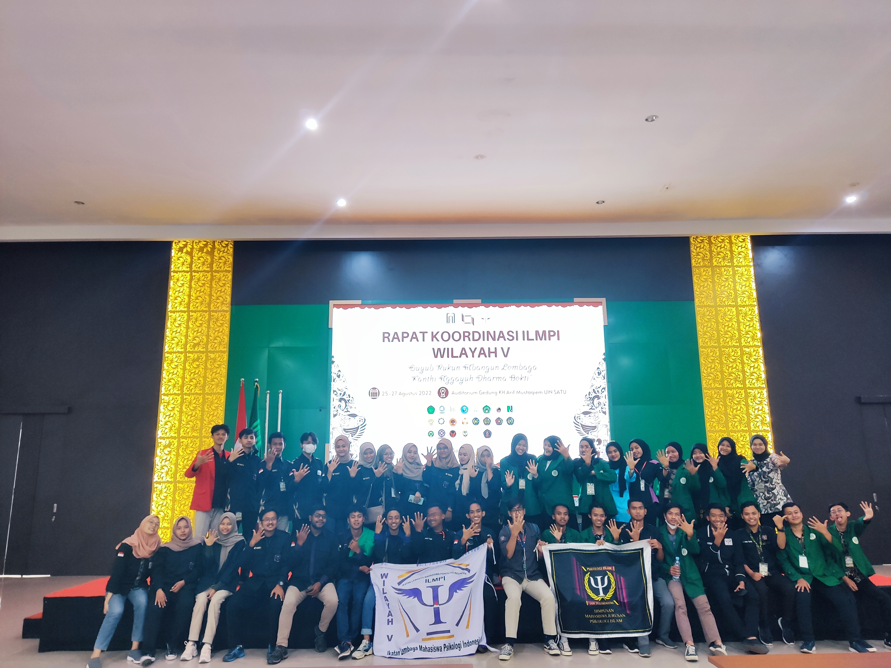
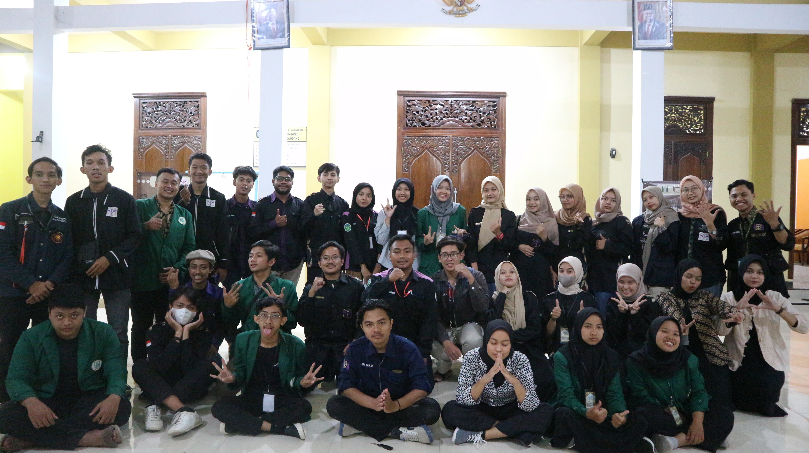
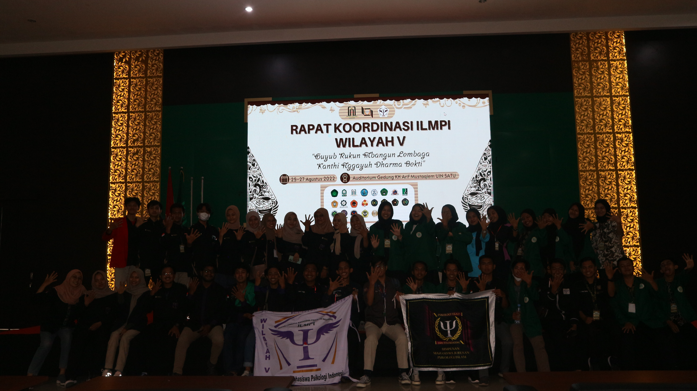
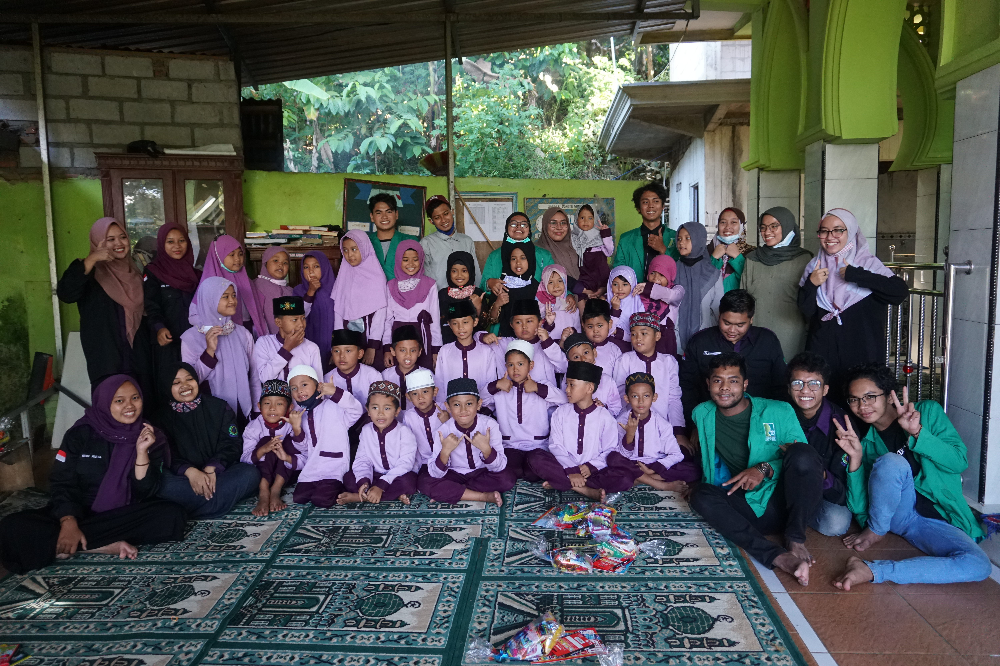
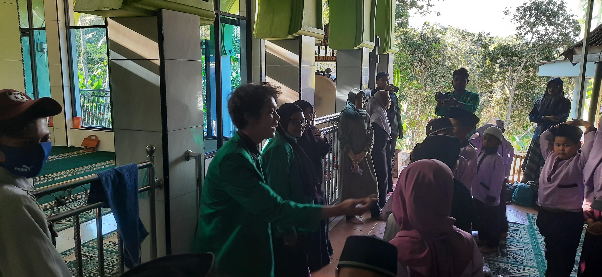
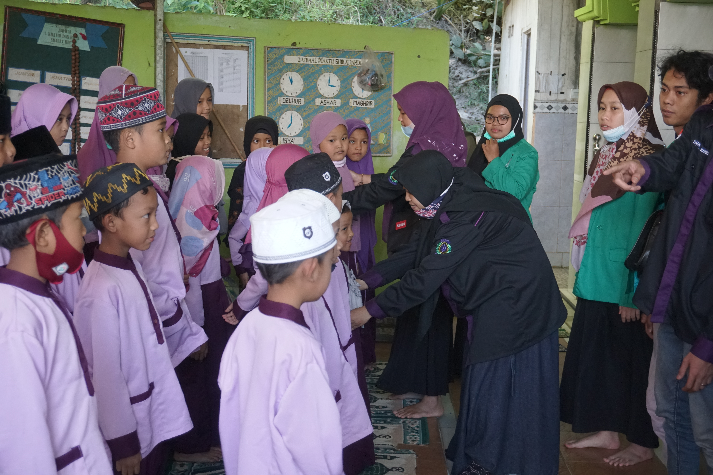

Dokumentasi perjalanan karya, edukasi, dan pengabdian.
Menghadiri Rapat Koordinasi Ikatan Lembaga Mahasiswa Psikologi Indonesia. Sebuah momen berharga untuk bertukar pikiran, membangun relasi, dan memperkuat solidaritas antar mahasiswa psikologi se-Indonesia.



Turun langsung ke lapangan Bersama Himpunan Mahasiswa Psikologi dan Badan Eksekutif Mahasiswa Universitas Islam Raden Rahmat Malang, untuk memberikan layanan dukungan psikososial (LDP). Fokus utama adalah memvalidasi rasa trauma, memberikan Psychological First Aid (PFA), dan membangun kembali resiliensi warga terdampak, terutama kelompok rentan seperti anak-anak dan lansia.


